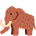

Work through each part when your teacher gets to it. Everything saves on this computer as you go.
The return of the dire wolf
Read, then type- The dire wolf was a large prehistoric wolf. It went extinct about 10,000 years ago. Only its fossils are left.
- In April 2025, scientists said they had brought it back. They changed the DNA of the grey wolf, its closest living relative.
- A dog gave birth to the puppies. The scientists called this de-extinction.
- Next on their list: the woolly mammoth, the dodo and the Tasmanian tiger.
List every extinct animal you have ever heard of.
Storyboard: the dire wolf returns
Draw and captionTell the story in three panels. Draw a picture and write one sentence in each.
Find the closest living relative
GameHow could we bring an animal back? Scientists follow four steps.
Match each extinct bird to its closest living relative. Think about shape, beak, legs and colour.
Classification notes
Fill the gapsType the missing word in each gap. Two words in the bank are not used.
Woolly mammoth vs Asian elephant
Compare
Woolly mammoth
Asian elephant
With a partner, find at least 3 similarities and 3 differences.
| Similarities | Differences |
|---|
Storyboard: bring back the mammoth
Draw and captionYou are the scientist. Draw and caption each step of your plan.
What do you think?
Your opinion“We should bring extinct animals back.” Pick your corner for each round, and say why.
Meet the prehistoric animals
Choose oneClick the cards to read about them. Choose one animal for your slideshow.
My slideshow
Make itChoose an animal in Part 8 first. Then build your slides here.